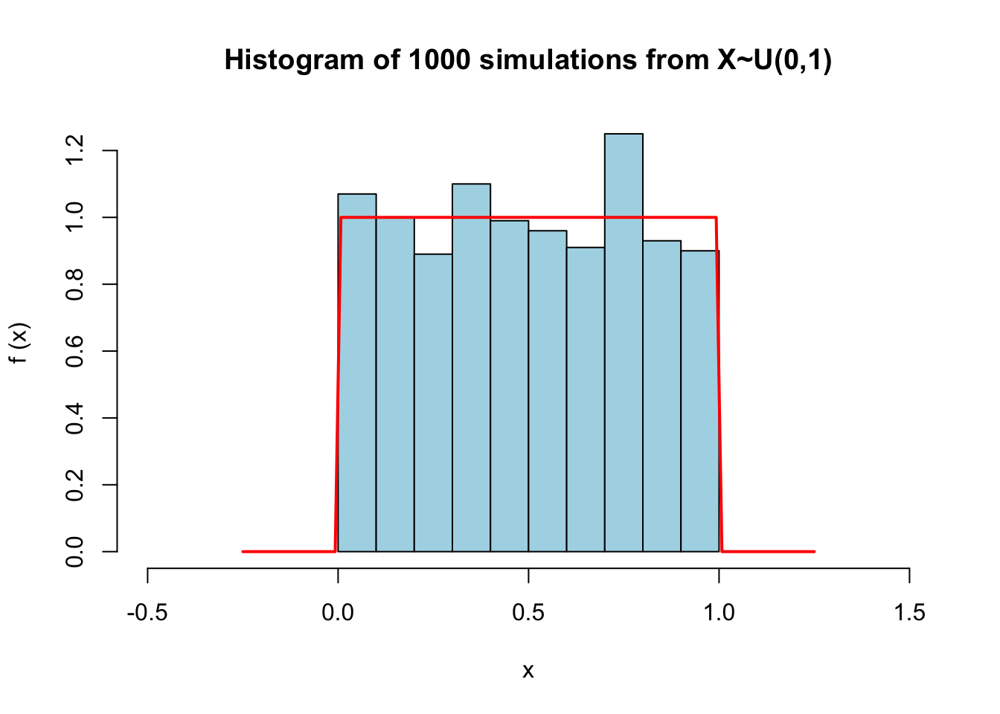
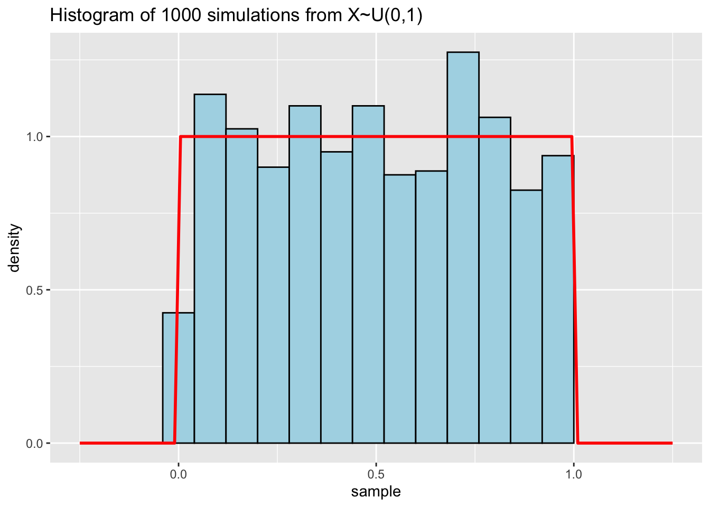

data <- data.frame(
id = 1:3,
score = sample(5:10, 3, replace = TRUE) # sample(list, n) allows you to sample number n values from list
)
data id score
1 1 7
2 2 10
3 3 7Data frame, random numbers, and functions
Mengqi Chen
January 30, 2024
When we read a CSV file with read.csv, there is an argument header deciding whether it reads the first row as the column names of the variables.
Recall that last time, we generated a random data frame of columns named “id” and “score” first.
data <- data.frame(
id = 1:3,
score = sample(5:10, 3, replace = TRUE) # sample(list, n) allows you to sample number n values from list
)
data id score
1 1 7
2 2 10
3 3 7Now, we write data into a CSV file
If we read with header=TRUE (default in this case), “id” and “score” are parsed as column names instead of variable values
id score
1 1 7
2 2 10
3 3 7However, if we read with header=FALSE, then “id” and “score” are regarded as values
V1 V2
1 id score
2 1 7
3 2 10
4 3 7In this case, you would run into problems if you simply take the first column of data_read:
You also run into problems if you are getting a column by its name:
header is defaulted to TRUE if and only if the first row contains one fewer field than the number of columns. For further details, use ?read.csv to check the full documentation.
The R Console is an interactive platform for immediate execution of individual commands, ideal for exploratory data analysis and quick tests.
In contrast, R Scripts are non-interactive files where code can be written, saved, and executed in a structured and reproducible manner, suitable for complex and longer projects.
When you find a useful R package that isn’t already installed on your system, you use install.packages() to download and install it. This is typically a one-time process for each package. For example, to install the ggplot2 package, you would use:
Every time you start a new R session and want to use a previously installed package, you need to load it using the library() function. This needs to be done at the beginning of your scripts to ensure that all functions from the package are available. For example:
This command does not install the package again, but simply makes its functionality available in your current session.
To convert a string that represents a number into a numeric format, you can use the as.numeric() function. For example:
Conversely, if you need to convert numbers to strings, perhaps for output formatting, use the as.character() function:
In R, a function is defined using the function keyword. The basic syntax is:
This creates a function myFunction that takes two arguments arg1 and arg2, adds them together, and returns the result.
Once a function is defined, it can be called with specific values for its arguments.
The apply family of functions in R is used to apply a function over the margins of an array or matrix, and it’s particularly useful for data frames. For example, apply can be used to apply a function to each column or row of a data frame.
# Define a simple function to calculate the mean
meanFunction <- function(x) {
return(mean(x))
}
# Apply meanFunction to each column of df to get the mean of each column
apply(df, MARGIN = 2, FUN = meanFunction) # MARGIN = 1 indicates rows (try it!)a b
2 5 This will calculate the mean of each column in the data frame df.
The following is the Lab 2 worksheet kindly designed by Yujing Lu, the module tutor.
(i) Generate two vectors \((v_1,v_2)\) of 30 random integers each, where the elements in \(v_1\) are uniformly drawn from \(\{80,81,\dots,100\}\), and the elements in \(v_2\) are uniformly drawn from \(\{60,61,\dots, 90 \}\), with replacement.
(ii) Generate a vector of 30 random names using the randomNames() function. Remember to install the randomNames package and load it!
set.seed() allows the code to be reproducible by setting a specific seed value. When a seed is set, the sequence generated remains deterministic.
We aim to record the names, assignment marks, and exam marks of 30 students from course 1 in a table. Using the functions above, first generate these items randomly, then combine them into a data frame with three columns: “names”, “assignment”, and “exam”.
(i) First, calculate the final marks for this course using the formula \[\text{Final mark} = 0.2\times \text{Assignment} + 0.8\times \text{Exam}\] and add this information to a new column named finalMark.
(ii) Can you find the student with the highest finalMark?
finalMarks - look up the different between sort and order!arrange function in the dplyr package for this task (optional). names assignment exam finalMark
17 Hagen, Sally 100 90 92 names assignment exam finalMark
17 Hagen, Sally 100 90 92Using dplyr:
(iii) Next, calculate the means of assignment, exam, and finalMarks, respectively.
(iv) Then, randomly pick 10 students and set then to have chosen course 2. The other students have not chosen this course. Please add a column course2 to indicate their choice (0 for yes,1 for no).
(v) Finally, find the students with marks above 85 and who haven’t chosen course 2 by extracting values from the names column. You can also use the apply() function for this purpose. Verify if these two methods give the same results.
[1] "Mcdonald, Demetri" "Gonzalez, Marissa" "Hagen, Sally"
[4] "Aragon, Faustina" "Dubus, Jesse" "Ash, Richard" Recall that the Fibonacci sequence is defined by recurrent relations:
\(F_0=0,\ F_1=1,\ F_n=F_{n-1}+F_{n-2}\).
Define a function to produce the nth Fibonacci number with or without a loop.
Simulate 1000 samples from a uniform distribution \(X\sim U[0,1]\) and create a histogram of the generated sequence. Overlay the histogram on the probability density function - does the histogram reflect the density well?
dunif(), which defines the probability density function of a uniform distribution.hist function - alternatively, you can try the ggplot2 package.# get 100 evenly spaced values between -0.25 and 1.25 to plot the probability density function of the uniform distribution
x <- seq(-0.25, 1.25, length.out=100)
#plotting the histogram
title <- sprintf("Histogram of %d simulations from X~U(%d,%d)", num_sample, 0, 1)
hist(sample, main = title, xlim = c(-0.5, 1.5), xlab = "x", prob = TRUE,col="lightblue", ylab="f (x)")
lines(x, dunif(x,min=0,max=1), col = "red", lwd = 2)
With ggplot2:
# Load ggplot2 library
library(ggplot2)
# Create a data frame for the samples
df <- data.frame(sample)
# Create the histogram and overlay the probability density function
ggplot(df, aes(x = sample)) +
geom_histogram(aes(y = after_stat(density)), binwidth = 0.08, fill = "lightblue", colour = "black") +
# here (y = after_stat(density)) means that we map the y-axis aesthetic to the density of the data, rather than the count, which is the default.
stat_function(fun = dunif, xlim = c(-0.25, 1.25), args = list(min = 0, max = 1), colour = "red", linewidth = 1) +
labs(title = sprintf("Histogram of %d simulations from X~U(%d,%d)", num_sample, 0, 1))
If we increase the number of simulations, does the fit improve?
This is a more complicated simulation game and is not compulsory - try it if you are interested!
A and B are tossing a fair coin. A wins if HHH appears first; B wins if HTH appears first. Who is more likely to win?
We can write some codes to simulate the game
simulate_coin_toss <- function(sequence_a, sequence_b, num_simulations = 1000) {
wins_a <- 0
wins_b <- 0
# play the game num_simulations times
for (i in 1:num_simulations) {
# keep tossing until there is a winner
coin_sequence <- ""
while (!grepl(sequence_a, coin_sequence) && !grepl(sequence_b, coin_sequence)) {
coin_sequence <- paste0(coin_sequence, sample(c("H", "T"), 1, replace = TRUE))
}
# record the winner
if (grepl(sequence_a, coin_sequence)) {
wins_a <- wins_a + 1
} else {
wins_b <- wins_b + 1
}
}
# use the number of wins to estimate the winning probability
prob_a_wins <- wins_a / num_simulations
prob_b_wins <- wins_b / num_simulations
return(c(prob_a_wins, prob_b_wins))
}
# Call the function
simulate_coin_toss("HHH", "HTH")[1] 0.39 0.61# Function to calculate expected number of tosses
expected_tosses <- function(sequence, num_simulations = 1000) {
toss_counts <- numeric(num_simulations)
for (i in 1:num_simulations) {
coin_sequence <- ""
toss_count <- 0
while (!grepl(sequence, coin_sequence)) {
coin_sequence <- paste0(coin_sequence, sample(c("H", "T"), 1, replace = TRUE))
toss_count <- toss_count + 1
}
toss_counts[i] <- toss_count
}
mean(toss_counts)
}
# Calculate for sequences "HHH" and "HTH"
expected_tosses("HHH")[1] 13.994[1] 9.572